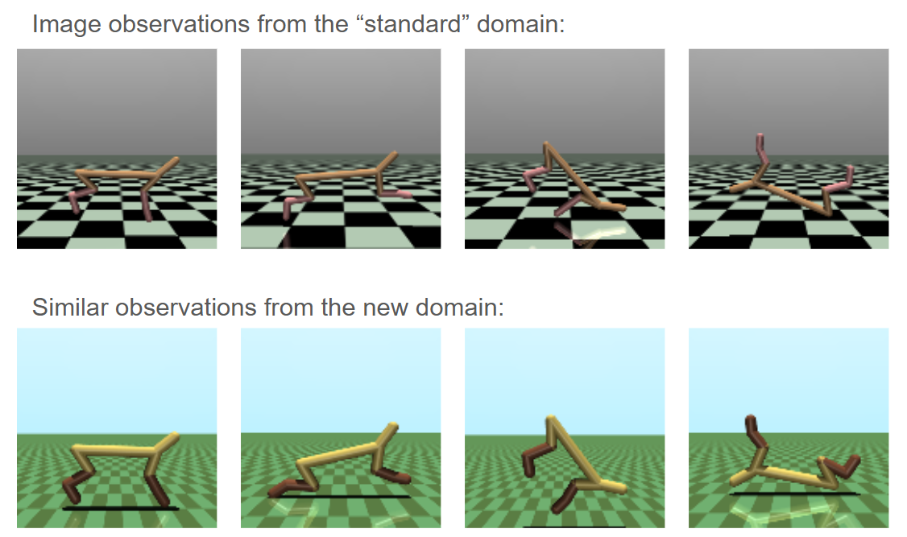
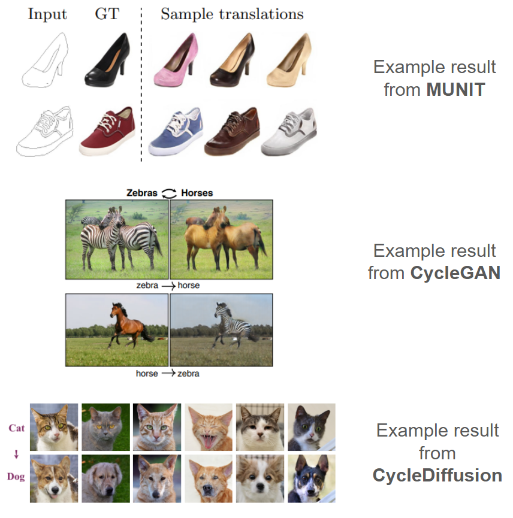
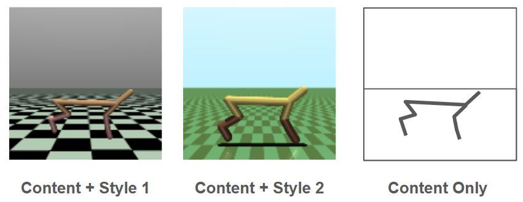
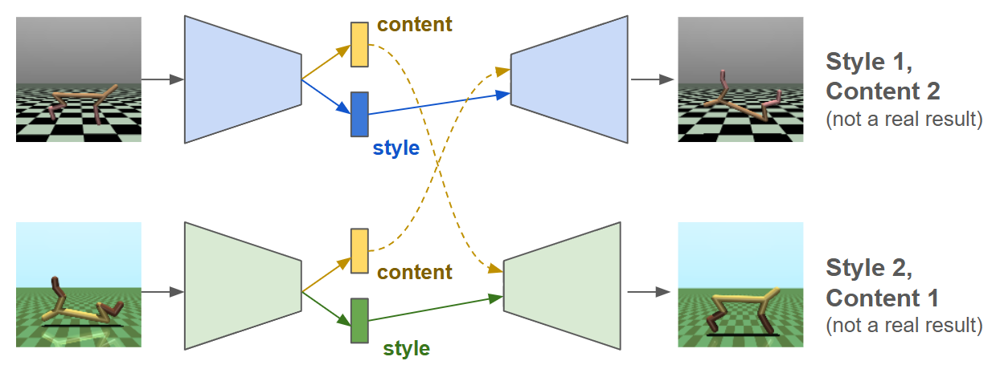
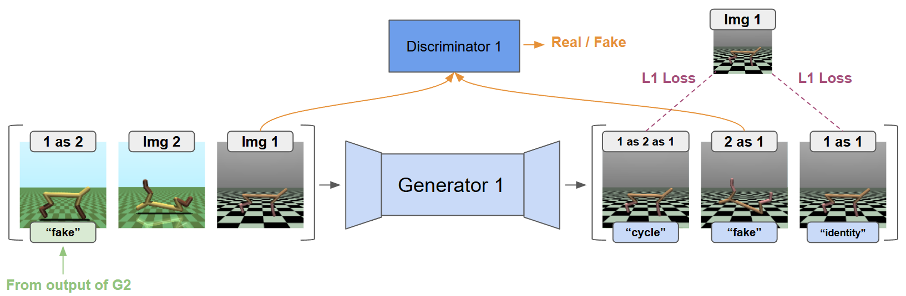
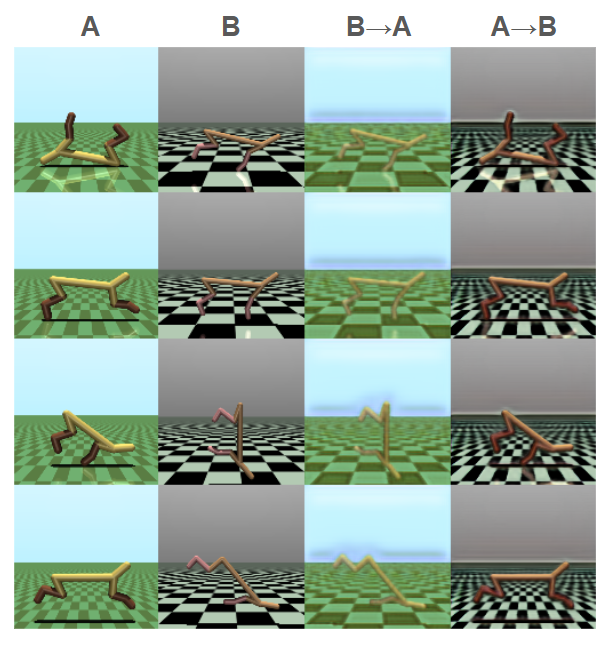
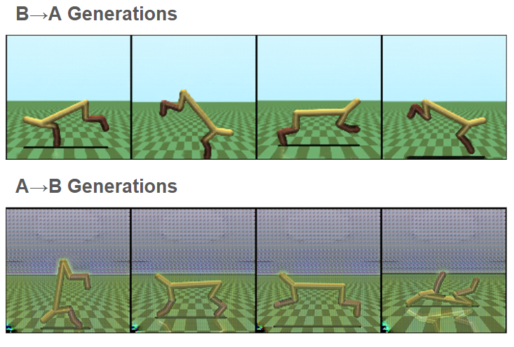
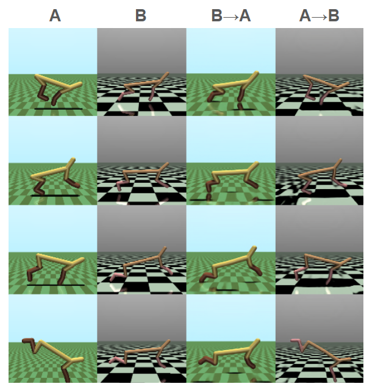
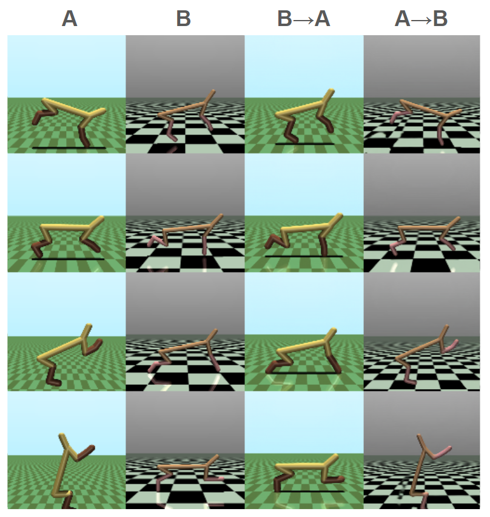
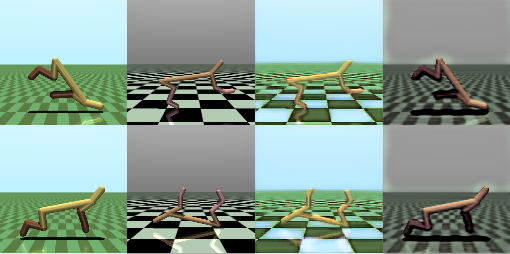

MuJoCo CycleGAN
(Mis)Adventures in Style Transfer, Part 1
Above: Randomized half-cheetahs representing various related domains.
A Toy Problem
An idea I have been very interested in lately is style transfer for imitation learning: is it possible to collect demonstrations in one domain (i.e. videos of an animal running), and reconstruct an equivalent in a second domain (i.e. a quadruped simulation). This would unlock many potential data sources for expert demonstration.
To explore this, I set up a toy problem: two variants of HalfCheetah, one the "standard" version from DRL, and the other with slightly different colors, proportions, and textures. Using only unpaired samples (image states) from both environments, is it possible to convert between them?
This is proved to be much more difficult than I expected, and even now I am not sure I fully tackled my supposed "toy" problem. I thought I would document all of the many pitfalls I have encountered thus far, strange results, and why this might be a harder problem than I anticipated. Also, I wanted to showcase some really horrible blobs that some of my generative models made, which I am calling "MuJoCo Cronenbergs".
Edit: This got long, and the blobs will be discussed and showcased in great detail in part 2.
Our Two Domains
For these experiments, I wanted to transfer pixel observations back and forth between the two environments shown below:

The new domain has slightly different dimensions and thicker links, but is generally capable of reaching the same states as original. More importantly, the new domain has different colors and a smaller checkerboard on the floor.
It turns out that this is a much harder problem than it appears. While the above images look simplistic because they not in a photorealistic environment, this actually leads to some tricky issues in style transfer:
1) There is very little shared visually between the domains. Conceptually they are very similar, but we only understand that as humans because we designate some sort of "objectness" to the cheetah and its environment. We cannot directly transfer any patches of pixels between the domains.
2) There are bold patterns that are clear giveaways of being in one domain or the other, and these are a huge portion of the image. Specifically, these are more visually dominant than the actual subject of the images.
3) The simple nature of the graphics leaves little room for error. If you want to generate natural images you can actually get pretty far with poor generations; clouds and foliage will still look natural even if they are a bit wonky. In this simulated world, visuals are precise and unforgiving.
To understand why these are tricky, here are some results from approaches that I attempted: MUNIT, CycleGAN, and CycleDiffusion. All of these works are applied to multiple domains, but I selected these since they are illustrative:

Note that in all these cases, the background details are shared between domains. This isolates the differences between the two domains for the networks, and makes it easier to learn. This is especially important for GAN-based approaches (MUNIT and CycleGAN), which explicitly learn to distinguish between the two (or more accurately, between real and fake members of each).
The examples above come from domains which have their own sets of challenges (more details, for example), but I just wanted to highlight some of the peculiarities of doing style transfer on simulated images. In hindsight, I would recommend something else for initial experimentation.
MUNIT
Having recently spent a lot of time exploring world models and GAIL (post coming eventually), it was very appealing to attempt solving this with some sort of autoencoder. If both domains can be compressed into some sort of style-less latent space, then this is an excellent starting point for down-stream applications. For example, this could be directly fed into an MLP-based policy that is "style agnostic". i.e., some sort of latent style-transfer could perhaps double as a nice representation for future tasks.
This "style-less" latent space is one of the key ideas behind MUNIT (which is an extension of UNIT), and I think intuitively this idea makes a lot of sense. In both of our domains, there is some simpler, style-less representation that captures the content of the images. A network would represent this as some latent bottleneck, but we can even express this visually:

If we can extract the content from the image, then we can re-generate it in either style. In MUNIT, we learn an autoencoder for each style that learns two latent spaces: one for content and one for style. If done correctly, we can swap the content around between the two systems to generate in a desired style:

During training, MUNIT has a lot more than this going on. A discriminator is trained for each domain to help ensure that content from domain A still leads to a valid image in domain B, and vice versa. Additionally, a loss is added to ensure that if a content and style are decoded to make an image, then these same content and style features can be recovered by the encoder (a sort of inverse autoencoder- an autodecoder?).
I really struggled getting results with this technique, and called it quits when I looked at the official repo and it said that they trained with 8 GPUs. I ran into mode collapse many times, and I am unclear how best to remedy this. I definitely would like to try to fix my implementation in the future, since this approach is very elegant on paper.
CycleGAN
CycleGAN proved to be much more forgiving than MUNIT, as I almost always could get a recognizable image to be produced during transfer. While similar to MUNIT, CycleGAN uses an image-to-image network to transfer between styles without the extreme bottleneck of an autoencoder, and this means that the "gist" of the input is going to be pretty easy to capture and retain in the new style.
I will say that I initially messed this aspect up pretty severely- if you google CycleGAN there are lots of nice network diagrams, and many of them depict an encoder/decoder setup. This really isn't true. CycleGAN uses fully convolutional networks that don't compress the images too much (4x width and height in my case). Instead, imagine feeding an image from one domain through a long ResNet chain of convolutions, and having the corresponding re-styled image come out the other end.
CycleGAN trains two of these convolutional nets, which function as "generators". Each generator is trained with three different losses. Here a subscript denotes a description of the image domain or domains.
Identity Loss: An image already in the desired domain should not be affected by passing through the generator.
-
GAN Loss: An image converted to a new domain should not be distinguishable from true images from that domain (via a discriminator).
Flows back from
where:
Cycle Loss: An image converted to a new domain should be convertible back to its original domain, completing a "cycle" through both generators.
where:
These are symmetrical for the other generator (swap A and B above).
We also need to train a discriminator for each domain, which is the same as other GANs. I tried adding a gradient penalty but it works fine without one. We have:
Discriminator Loss: Learn to classify true images and fake images.
Like the generators, this occurs symmetrically for both domains.
To summarize the above, a diagram of (one half) of CycleGAN. Repeat for both domains.

Architectures
To capture this somewhere, the architectures I used were primarily taken from this repo, and most changes to them made them worse. I only tweaked them slightly in the end.
Generator:
Input images normalized [-1,1], and an initial convolution to get up to desired number of channels.
Conv block followed by downsample (pooling), from (128x128) to (64x64)
Conv block followed by downsample, from (64x64) to (32x32)
A bunch of ResNet blocks in a row at this same size, something like 10 blocks of 2 convs each.
Upsample followed by conv block, to get back to (64x64)
Upsample followed by conv block, to get back to (128x128)
End with tanh() to output in [-1,1]
Discriminator:
Input images normalized [-1,1], and an initial convolution to get up to desired number of channels.
Conv block followed by downsample (pooling) to reduce dimensions by half
- Repeat this until it gets really small. I used five of these to get down to (4x4).
Flatten into a 2 or 3 layer MLP that ends with a single output
End with sigmoid activation.
- I don't know why this uses MSE() of a sigmoid instead of BCE. But it works. If someone knows, please tell me.
Results of CycleGAN
CycleGAN works fairly well. Images are clearly recognizable as one domain or the other, although this is primarily in coloring and textures. For example, the grid on the floor is almost always recolored when moving domains, but not re-generated in the appropriate size. Similarly, the thickness of the cheetah is not adjusted appropriately between domains. I think this is primarily due to the cycle loss: The model is encouraged to retain features where possible, and it is much easier to recolor a feature than erase it and then regenerate it when "completing the cycle".

It's... okay. I also got some results in which transferring away from the standard appearance works well, but not the reverse (this is the typical result I get when running the above repo without modification):

Brief Lessons from CycleGAN
I tinkered with the architecture a lot and noticed a few things:
It is easy to get mediocre results, but hard to get good results. The architectures seem quite finicky: playing around with different CNN architectures often results in miscoloring or exaggerated features in the output.
A larger discriminator (more channels, deeper) seems to always help. If you have some VRAM left, make the discriminator bigger.
It is really easy to screw up the losses because there are so many of them. Additionally, if only one is wrong, the results will be good enough as to make you think you have done it correctly.
The last point really got me, and I will detail my failures as both an illustrative lesson and a form of catharsis. With so many terms I got the order mixed up. Here is what I ran for my first few experiments:
# pseudocode: THIS IS WRONG
# first zero gradients for generators and discriminators
# generator passes
imgA_fake = GA(imgB)
imgA_cyc = GA(imgB_fake)
imgA_iden = GA(imgA)
# < repeat above for B >
loss_gen += L1(imgA, imgA_iden)
loss_gen += L1(imgA, imgA_cyc)
loss_gen += MSE(DA(imgA_fake), 1.0)
# < repeat above for B >
loss_disc += MSE(DA(imgA.detach()), 1.0)
loss_disc += MSE(DA(imgA_fake.detach()), 0.0)
# < repeat above for B >
loss_gen.backward()
opt_gen.step()
loss_disc.backward()
opt_disc.step()
# pseudocode: THIS IS WRONG
I was so close. When calling backward() on the generator loss, this backpropagates through the discriminator for the adversarial loss. Even though the discriminator has its own optimizer, a gradient is still introduced which is then added to when updating the discriminator.
There are probably a few ways to fix this but regardless of how you address it, you have to be very careful to keep things separate. If you have worked with GANs before this possibly obvious, but it definitely stumped me for a few days.
# pseudocode: THIS IS CORRECT
# first zero gradients for generators and discriminators
# generator passes for fake iamges
imgA_fake = GA(imgB)
# < repeat above for B >
# losses for discriminator
loss_disc += MSE(DA(imgA.detach()), 1.0)
loss_disc += MSE(DA(imgA_fake.detach()), 0.0)
# < repeat above for B >
# step discriminator now, before adversarial update to generator
loss_disc.backward()
opt_disc.step()
# the rest of the generator outputs
imgA_cyc = GA(imgB_fake)
imgA_iden = GA(imgA)
# < repeat above for B >
loss_gen += L1(imgA, imgA_iden)
loss_gen += L1(imgA, imgA_cyc)
loss_gen += MSE(DA(imgA_fake), 1.0)
# < repeat above for B >
loss_gen.backward()
opt_gen.step()
# pseudocode: THIS IS CORRECT
Making CycleGAN Work for this Problem
I suspected that the "cycle" was the main reason for deficiencies in the output: the generators are encouraged by the cycle to retain visual features rather than generate new ones. So, I decided to break the cycle:
# instead of this:
imgA_cyc = GA(imgB_fake)
loss_gen += L1(imgA, imgA_cyc)
# I did this:
imgA_cyc = GA(imgB_fake.detach()) # grad will not flow back into GB
loss_gen += L1(imgA, imgA_cyc)
That's it.
It works incredibly well. It turns out that this goes far beyond the grid on the floor- I think all the fuzziness can be explained by the generators trying to hold on to features rather than creating new ones that are properly in the desired domain. Here are the initial results:

It's not perfect but hugely improved. Textures appear to be appropriately sized, colored, etc. So I decided to train this for longer and with bigger networks. This worked really well. The shadows and reflections in column 3 are fixed and there are very few issues in the floor grid in column 4. I think this is going to be hard to beat:

I will also note something really interesting: if you take out the cycle loss entirely, it doesn't work. My best guess: the "broken" cycle loss seems to aid the generators by providing synthetic examples of paired training data. The data is not necessary very good, especially early in training, but it is still an example of some extractable structure with a corresponding ground truth in the target domain. Much more direct than a discriminator. Therefore, there is probably some sort of bootstrapping thing that happens: once the adversarial loss leads to mediocre style transfer, this actually acts as an example of good transfer the other way, albeit from a not-necessarily-in-distribution input. The bad quality of the input may even be helpful here.
Here are the results with no cycle at all:

Up Next
In the next post I will look at flow-matching methods that I have been examining in parallel, stemming from a work called CycleDiffusion.
Recent Posts:
MuJoCo Cronenbergs
(Mis)Adventures in Style Transfer, Part 2
February 10, 2025
MuJoCo CycleGAN
(Mis)Adventures in Style Transfer, Part 1
January 27, 2025
Flowing with Fewer Steps
Shortcut Models Notes and Review
December 12, 2024
More Posts